全部章节S05 · 苍山·登顶以后嘴也别停
按章审阅 · 11 张剧情图。点击图查看大图。
S05-01 · 苍山脚下

豪言未出口，幽白先被山风吹成一面小旗，主角拢紧衣领沿旧道进寨。
145 KB原图对照
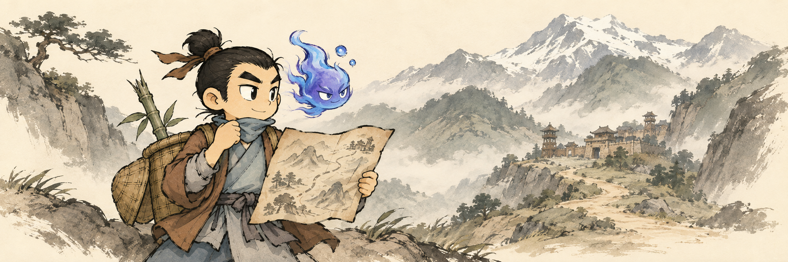
S05-02 · 苗族古寨
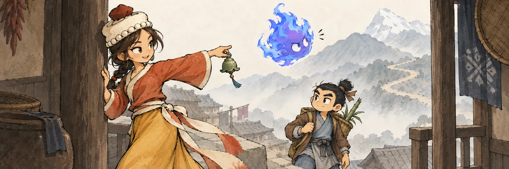
幽白朝着近在眼前的雪峰昂首，琼幺儿用铃柄把视线轻轻引回真正的山路。
169 KB原图对照
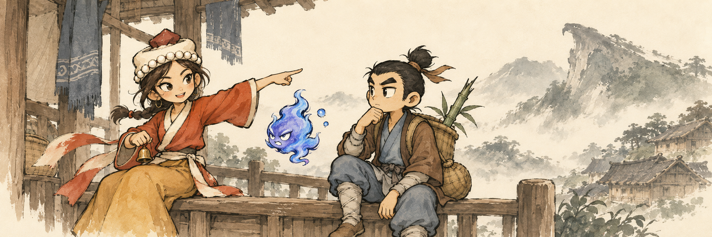
S05-03 · 暴风避雪
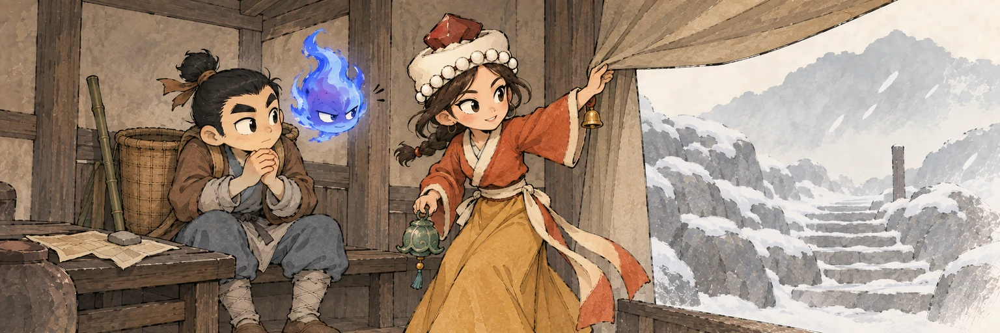
风刚松口，琼幺儿掀开挡风帘确认石阶；主角仍捂着手，幽白的‘以静制动’还没说完。
185 KB原图对照
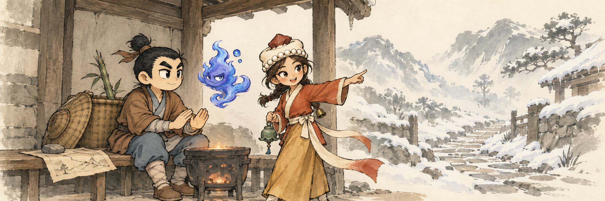
S05-04 · 定位鹰喙岩
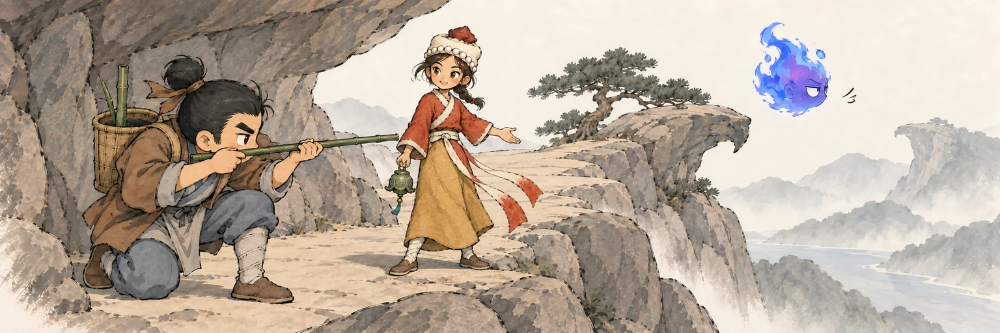
主角蹲低把岩角、老松与旧道对成一线，琼幺儿顺着这条真路线领走，幽白只好告别那块‘很像鹰’的孤石。
161 KB原图对照
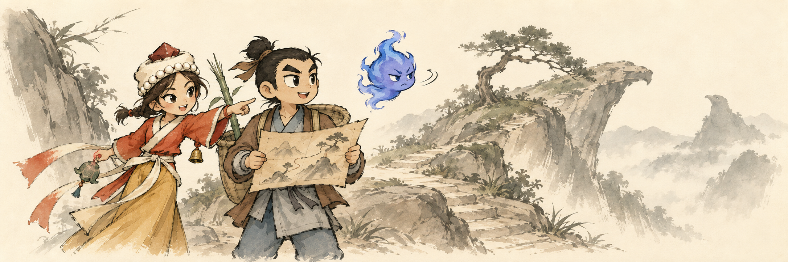
S05-05 · 洗马潭
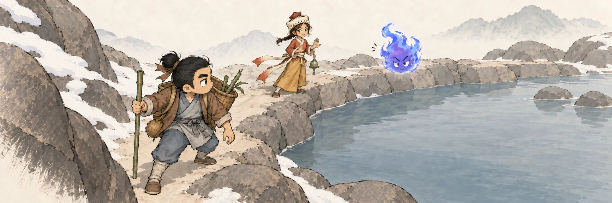
幽白顺着直线飘，两个有脚的人沿石岸绕；转弯处的动静让轻松的队伍同时停住。
144 KB原图对照
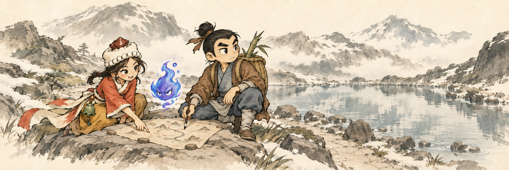
S05-06 · 英雄救美
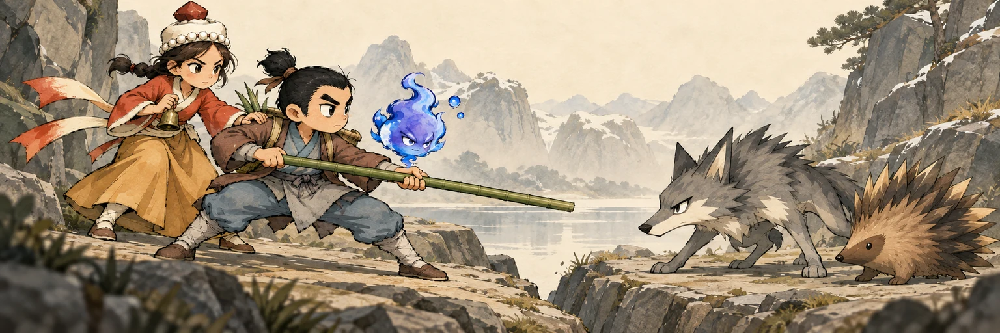
主角稳住横竿清开窄道，琼幺儿守住落脚点并伸手接应，两人互相搭把手而不是单向救美。
191 KB原图对照
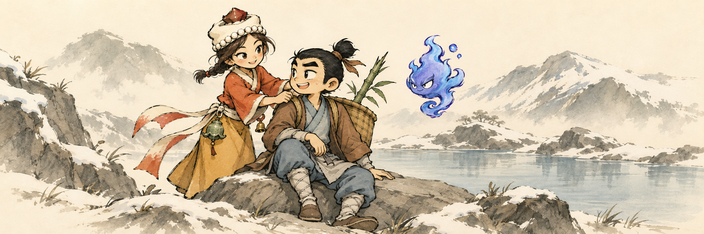
S05-07 · 坚持前行
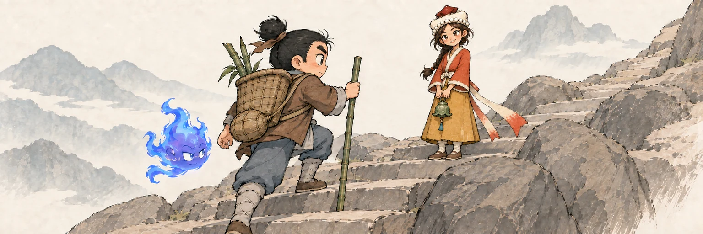
主角收好图，踏上亲自核实的下一阶；琼幺儿领先半步回望，幽白这次跟着真路走。
148 KB原图对照
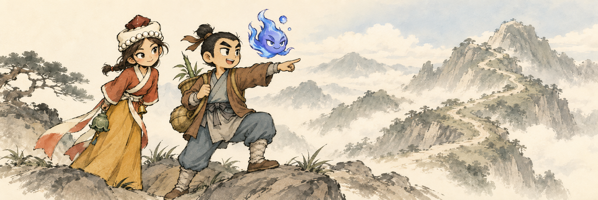
S05-08 · 暗生悔意
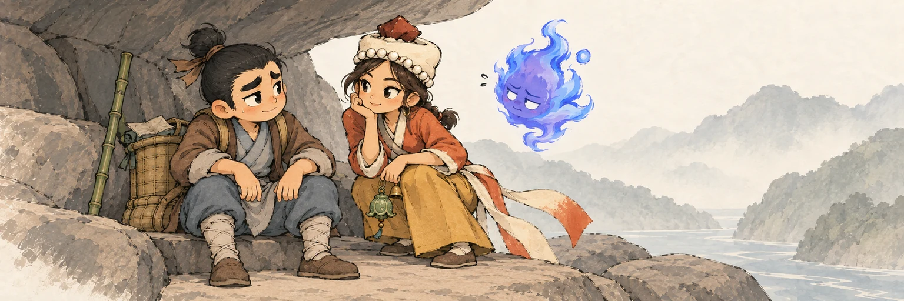
嘴硬的大侠先坐下缓口气，琼幺儿把脚步也慢下来，幽白不好意思地飘回身边。
161 KB原图对照
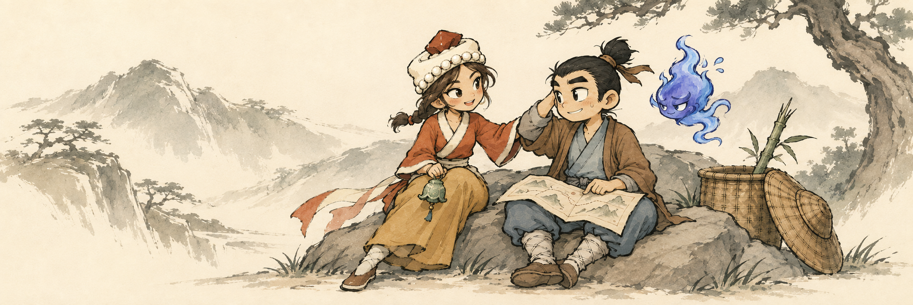
S05-09 · 幽白释疑
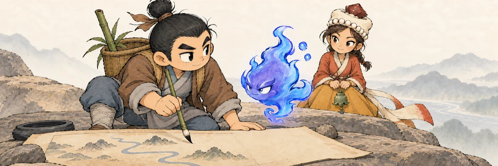
幽白主动挪开，给主角落笔订正留出位置：守旧图的人终于肯让新墨落下。
147 KB原图对照
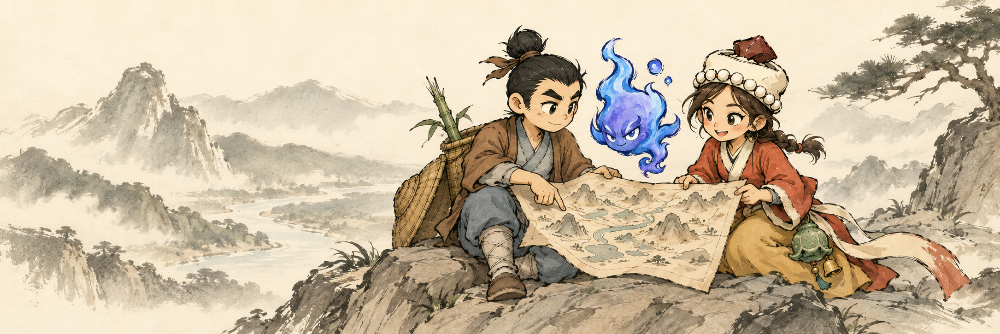
S05-10 · 苍山之巅
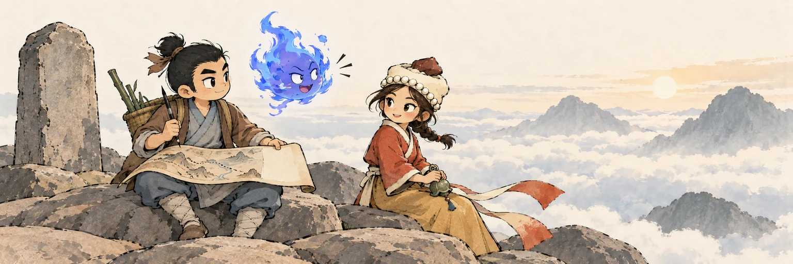
最后一笔落下又留白，三人面向云海歇肩；幽白的长篇感言被一阵山风轻轻打短。
147 KB原图对照
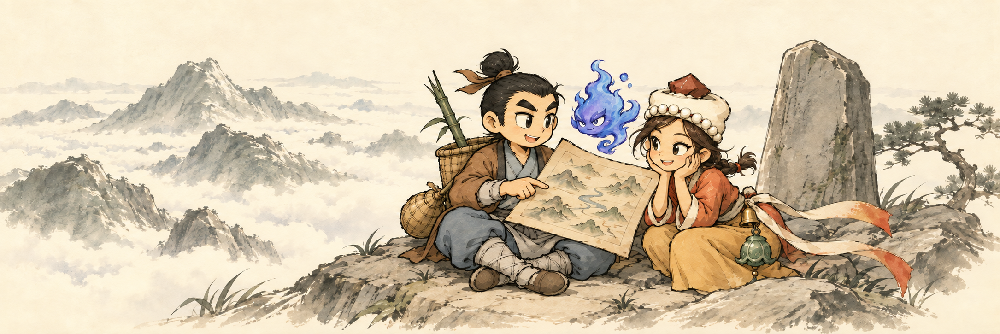
S05-11 · 苗家姑娘
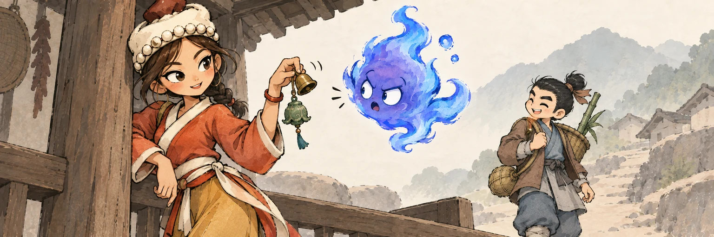
琼幺儿轻摇小铃，幽白停在半句，主角笑着把注意力从嘴上转回脚下的路。
169 KB原图对照
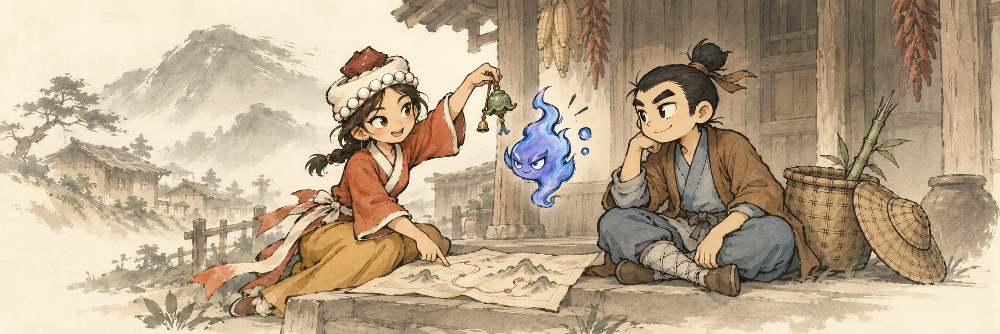